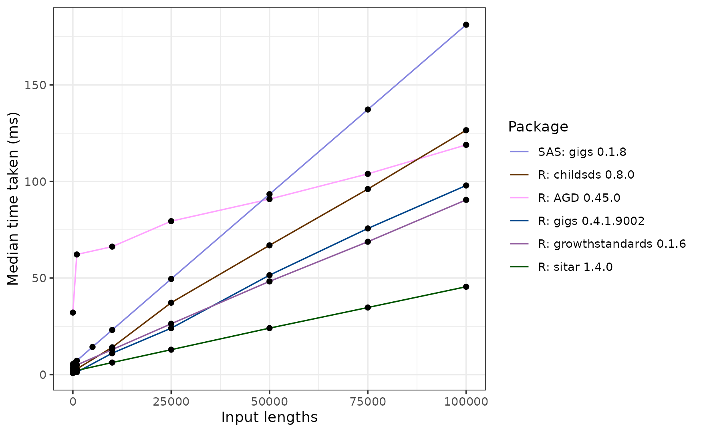
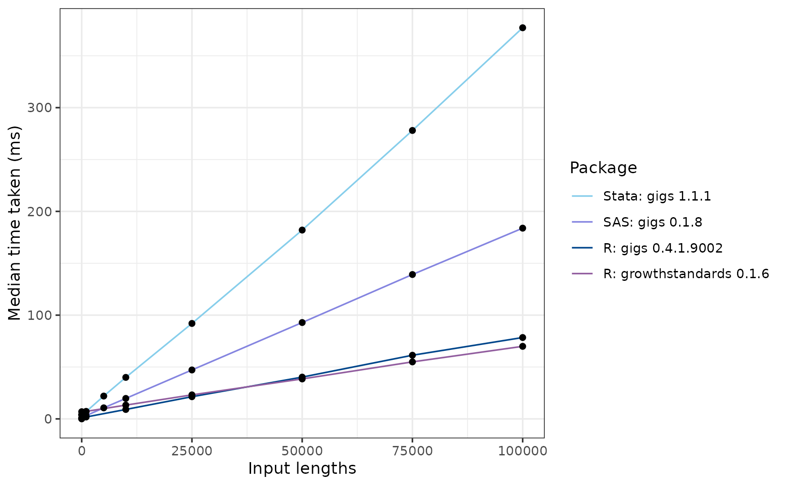
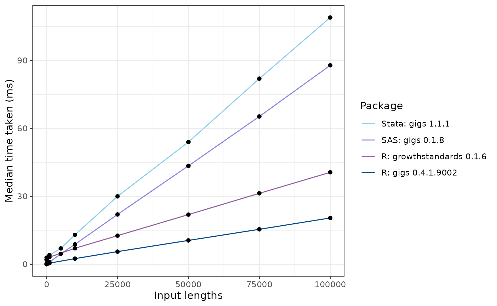
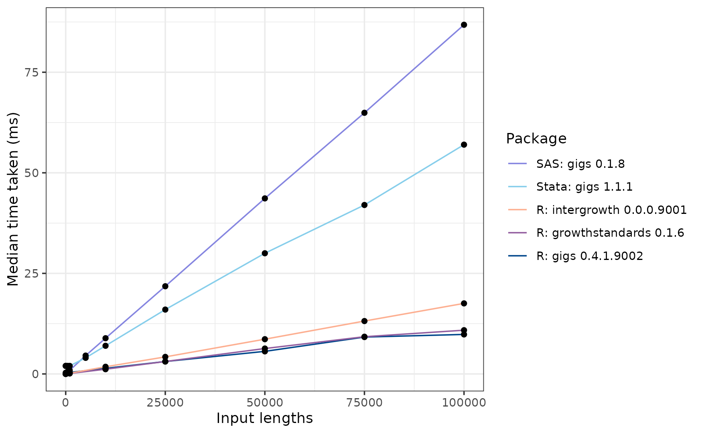

Benchmarking gigs against other software packages
Source:vignettes/articles/benchmarking.Rmd
benchmarking.RmdRationale
This short article describes the performance of gigs relative to a non-exhaustive group of R and non-R packages which implement international growth standards which are also found in gigs.
| Package name | Language | On CRAN? |
|---|---|---|
| gigs | R | Yes |
| anthro | R | Yes |
| AGD | R | Yes |
| childsds | R | Yes |
| sitar | R | Yes |
| zscorer | R | Yes |
| ki-tools/growthstandards | R | No |
| nutriverse/intergrowth | R | No |
| gigs (Stata) | Stata | No |
| zanthro (Stata) | Stata | No |
Thus far, there is no comprehensive benchmark comparing these different packages. This short article will compare the speed of each package from 1 to 100000 inputs, checking how fast each package can convert weight values to z-scores in different growth standards.
We performed these benchmarks on R version 4.4.1, using a Windows 10 system with a Ryzen 7 3700X processor and 16GB of DDR4 RAM. The Stata benchmarks were run in Stata 18.0 (revision 15 May 2023) on the same system, using the benchmark package for Stata.
Other R packages can be used to analyse growth data with international standards, but have limitations which are not present in gigs. There are also software packages external to R which implement these standards. The table below describes these packages, and to what extent they have implemented functions that let users convert anthropometric measurements to z-scores/centiles in each set of standards implemented in gigs - the WHO Child Growth standards, INTERGROWTH-21st Newborn Size standards (including Very Preterm), and the INTERGROWTH-21st Postnatal Growth standards for preterm infants. A tick (✅) indicates that a package contains functions for all growth standards within a set, a cross (❌) indicates that a package has no functions for a set of growth standards, and a warning sign (⚠️) indicates that some standards in a set are implemented, but not others.
| Software | Platform | WHO (0-5 years) | IG-21st NBS | IG-21st PNG | IG-21st Fetal | Functionality |
|---|---|---|---|---|---|---|
| gigs | R | ✅ | ✅ | ✅ | ✅ | Values ↔︎ z-scores/centiles |
| anthro | R | ✅ | ❌ | ❌ | ❌ | Values → z-scores |
| AGD | R | ✅ | ❌ | ❌ | ❌ | Values ↔︎ z-scores |
| childsds | R | ✅ | ❌ | ❌ | ❌ | Values → z-scores/centiles |
| ki-tools/growthstandards | R | ✅ | ✅ | ⚠️ | ⚠️ | Values ↔︎ z-scores/centiles |
| nutriverse/intergrowth | R | ❌ | ❌ | ❌ | ⚠️ | Values → z-scores/centiles |
| sitar | R | ✅ | ❌ | ❌ | ❌ | Values ↔︎ z-scores/centiles |
| zscorer | R | ✅ | ❌ | ❌ | ❌ | Values → z-scores/centiles |
| gigs (Stata) | Stata | ✅ | ✅ | ✅ | ✅ | Values ↔︎ z-scores/centiles |
| zanthro (Stata) | Stata | ✅ | ❌ | ❌ | ❌ | Values → z-scores/centiles |
Shared benchmark code
In this vignette, we perform benchmark performance in each a growth standard from each set of growth standards implemented in gigs. These are the:
- WHO child growth standards (0-5 years)
- INTERGROWTH-21st Newborn Size standards
- INTERGROWTH-21st Postnatal Growth standards
- INTERGROWTH-21st Fetal standards
The benchmarks utilise pre-generated datasets for growth standard.
The z-scores, x variable and sexes for each row are
generated (pseudo)randomly. Because the gigs test suite
validates its functions against published growth curve data from the WHO
and the INTERGROWTH-21st Project, we use gigs to
generate expected measurements for each observation. This dataset can
then be used to compare speeds for each package. These datasets are
generated with the following function:
benchmark_dataset <- function(n, family, acronym) {
data <- get(family, envir = asNamespace("gigs"))
if (family == "ig_fet") {
xvars <- data[[acronym]][[1]][[1]]
} else {
xvars <- data[[acronym]][[1]][[1]][[1]]
}
withr::with_seed(seed = 154237890, code = {
# Random z-scores around 0
z <- rnorm(n = n)
})
withr::with_seed(seed = 154237890, code = {
# X variables are non-discrete but within bounds of the desired acronym
x <- sample(xvars, size = n, replace = TRUE)
x_jitter <- c(runif(n = 5, min = -1, max = 1), 0)
x <- x + sample(x_jitter, size = n, replace = TRUE)
x <- pmax(pmin(x, max(xvars)), min(xvars))
# Sexes randomly sampled from male and female
sex <- sample(c("M", "F"), size = n, replace = TRUE)
}
)
gigs_fn <- get("zscore2value", envir = asNamespace("gigs"))
out <- if (family != "ig_fet") {
list(z = z, x = x, sex = sex, family = family, acronym = acronym)
} else {
list(z = z, x = x, family = family, acronym = acronym)
}
out$y <- do.call(what = gigs_fn, args = out)
if (family == "ig_fet") {
out$sex <- NA
}
as.data.frame(out, stringsAsFactors = FALSE)
}We’re using the bench package throughout this
vignette, specifically the bench::press() function, which
lets us compare function scaling by iterating through increasing amounts
of observations.
WHO Growth Standards
The World Health Organisation (WHO) Child Growth Standards are
included in gigs with the various who_gs_*conversion
functions. These standards are implemented in a variety of other
packages.
Set up benchmark dataset
# Generate 100,000-row dataset
ac_who_gs <- "wfa"
ds_who_gs <- benchmark_dataset(n = 100000,
family = "who_gs",
acronym = ac_who_gs)The first 10 rows of this dataset look like this:
## z x sex family acronym y
## 1 0.17839158 542.3057 M who_gs wfa 11.119034
## 2 1.08068286 436.8223 F who_gs wfa 10.829792
## 3 -0.70269294 1070.1117 F who_gs wfa 12.524220
## 4 0.09501730 6.0000 M who_gs wfa 3.502423
## 5 -0.44829268 1465.8223 F who_gs wfa 15.135840
## 6 -0.35747447 1527.0000 M who_gs wfa 15.958518
## 7 1.16612927 431.3057 M who_gs wfa 11.512052
## 8 -0.08746512 653.3057 F who_gs wfa 10.832094
## 9 -0.47685189 948.1117 M who_gs wfa 12.765554
## 10 0.80015420 581.3677 M who_gs wfa 12.206283Timing
R
temp_bp_who_gs_most <- bench::press(
input_len = c(1, 1000, 10000, seq(25000, 100000, 25000)),
{
selector <- seq_len(input_len)
weight_kg <- ds_who_gs$y[selector]
age_days <- ds_who_gs$x[selector]
acronym <- ds_who_gs$acronym[selector]
sex <- ds_who_gs$sex[selector]
sex_gs <- ifelse(sex == "M", "Male", "Female")
age_years <- age_days / 365.25
bm_who_gs <- bench::mark(
check = FALSE, filter_gc = TRUE, time_unit = "ms", min_iterations = 30,
gigs = gigs::value2zscore(weight_kg, age_days, sex,
family = "who_gs", acronym = ac_who_gs),
anthro = anthro::anthro_zscores(weight = weight_kg,
age = age_days,
sex = sex)$zwei,
AGD = AGD::y2z(y = weight_kg,
x = age_days,
sex = sex,
ref = AGD::who.wgt,
tail.adjust = TRUE),
childsds = childsds::sds(value = weight_kg,
age = age_years,
sex = sex,
male = "M",
female = "F",
item = "weight",
ref = childsds::who.ref),
gs = growthstandards::who_value2zscore(y = weight_kg, x = age_days,
y_var = "wtkg", x_var = "agedays",
sex = sex_gs),
sitar = sitar::LMS2z(y = weight_kg, x = age_years, sex = sex,
measure = "wt", ref = sitar::who06)
)
})
temp_bp_who_gs_zscorer <- bench::press(
input_len = c(1, 1000, 5000, 10000, 15000),
{
selector <- seq_len(input_len)
weight_kg <- ds_who_gs$y[selector]
age_days <- ds_who_gs$x[selector]
sex <- ds_who_gs$sex[selector]
df_zscorer <- data.frame(
weight = weight_kg, age = age_days,
sex = ifelse(sex == "M", 1, 2)
)
bm_who_gs <- bench::mark(
check = FALSE, filter_gc = TRUE, time_unit = "ms", max_iterations = 5,
zscorer = zscorer::addWGSR(
df_zscorer, sex = "sex", firstPart = "weight", secondPart = "age",
index = "wfa"
)
)
})
bp_who_gs <- dplyr::bind_rows(temp_bp_who_gs_most, temp_bp_who_gs_zscorer) |>
dplyr::mutate(desc = attr(expression, which = "description")) |>
dplyr::select(!expression, !result, !memory, !time, !gc)Stata
# Save .dta file equivalent of benchmarking table. This can be used to benchmark
# Stata packages.
haven::write_dta(
data = ds_who_gs,
path = file.path("exclude", "statabench", "bench_ds_who_gs.dta")
)In Stata, the commands are run inside a do-file which utilises the benchmark
package for Stata. This code essentially does the same as
bench::press(), but for the packages we’re testing in
Stata.
// This is Stata code
foreach i in 1 10 100 500 1000 5000 10000 25000 50000 75000 100000 {
use "benchmarking/bench_ds_who_gs.dta", clear
qui drop if _n > `i'
di "Number of inputs: `i'"
bench, reps(25) restore last: ///
qui egen double z_gigs = who_gs(y, "wfa", "v2z"), ///
xvar(x) sex(sex) sexcode(m=M, f=F)
}
foreach i in 1 10 100 500 1000 5000 10000 25000 50000 75000 100000 {
use "benchmarking/bench_ds_who_gs.dta", clear
qui drop if _n > `i'
di "Number of inputs: `i'"
bench, reps(25) restore last: ///
qui egen z_anthro = zanthro(y, wa, WHO), xvar(x) gender(sex) ///
gencode(male=M, female=F) ageunit(day)
}Package comparisons: timing
On the whole, zscorer is by far the slowest R package,
taking around 13.705 seconds to process 100,000 inputs. Looking at the
source code, this is because zscorer::addWGSR() hasn’t been
vectorised. Next slowest is anthro, which takes 2.211
seconds to process 100,000 inputs. This slowdown arises from
anthro computing results in every WHO Child Growth standard
each time anthro::anthro_zscores() is called, but also due
to a slower implementation of the WHO LMS procedure than the other R
packages.
Next slowest is the Stata package zanthro, which takes
around 2.046 seconds to compute results in a single WHO standard. About
4 times faster than zanthro is gigs for Stata,
which scales more efficiently than zanthro and takes around
0.405 seconds to convert 100,000 measurements to z-scores.
Focussing on the faster R implementations reveals some interesting patterns:

The sitar package is far and away the fastest here,
taking ~46 ms to process 100,000 inputs. This is because it uses the
monthly LMS coefficients to calculate its z-scores. Whilst this is
quicker, it does induce some imprecision when compared to the other
packages.
Next fastest was the growthstandards package at ~88 ms
for 100,000 inputs, followed by gigs (~100 ms),
childsds (~125 ms), and lastly AGD (~119 ms).
Interestingly, AGD starts out much slower than the other
‘fast’ packages, but may scale more efficiently.
Package comparisons: numerical consistency
In our testing of the WHO standards, we found that the tested
packages mostly agreed with each other when provided the same inputs,
except for childsds and sitar.
For childsds, this is because the WHO Child Growth
standards constrain z-scores in the outer tails (i.e. past 3 z-scores),
as their data was more sparse for these extreme values. More information
on this constraining procedure can be found in the reports referenced in
the gigs::who_gs_value2zscore() documentation. It appears
that childsds does not perform this constraining procedure,
so conversions where abs(z_score) > 3 are computed
incorrectly:
discrepancies <- data.frame(z = c(-3.03, -2.97, 2.97, 3.03),
age_days = 0,
sex = "M") |>
dplyr::mutate(
weight_kg = gigs::zscore2value(z, age_days, sex, "who_gs", "wfa"),
# GIGS z-score
z_gigs = gigs::value2zscore(weight_kg, age_days, sex, "who_gs", "wfa"),
# growthstandards z-score
z_growthstandards = growthstandards::who_wtkg2zscore(
age_days, weight_kg, "Male"
),
# childsds z-score
z_childsds = childsds::sds(
value = weight_kg, age = age_days / 365.25,
sex = sex, male = "M", female = "F",
item = "weight", ref = childsds::who.ref
)
)When we look at these z-scores, you can see that both
growthstandards and gigs correctly apply the
constraining procedure; childsds does not. The
AGD package constrains z-scores if the
tail.adjust option in AGD::y2z() is specified,
and from looking at the anthro source code, they also apply
the constraining procedure.
| z | age_days | sex | weight_kg | z_gigs | z_growthstandards | z_childsds |
|---|---|---|---|---|---|---|
| -3.03 | 0 | M | 2.068938 | -3.03 | -3.03 | -3.031770 |
| -2.97 | 0 | M | 2.091082 | -2.97 | -2.97 | -2.970000 |
| 2.97 | 0 | M | 5.011546 | 2.97 | 2.97 | 2.970000 |
| 3.03 | 0 | M | 5.048978 | 3.03 | 3.03 | 3.028744 |
Discrepancies between sitar and gigs arise
from sitar relying on monthly LMS values for the WHO Growth
Standards, instead of the daily tables. This means for the same day,
sitar and gigs will use slightly different
lambda/mu/sigma values, and so compute different z-scores for the same
measurements.
INTERGROWTH-21st Newborn Size standards
The INTERGROWTH-21st Newborn Size standards are
implemented in gigs for R and Stata, and in the
growthstandards package for R. Let’s make a new dataset,
ds_ig_nbs, which we will use to benchmark these
functions:
ac_ig_nbs <- "wfga"
ds_ig_nbs <- benchmark_dataset(n = 100000,
family = "ig_nbs",
acronym = ac_ig_nbs)The first 10 rows of this dataset look like this:
ds_ig_nbs[1:10, ]## z x sex family acronym y
## 1 0.17839158 199.6505 M ig_nbs wfga 1.1849768
## 2 1.08068286 213.1492 M ig_nbs wfga 1.7851534
## 3 -0.70269294 174.0968 F ig_nbs wfga 0.5907529
## 4 0.09501730 236.1492 F ig_nbs wfga 2.0900137
## 5 -0.44829268 232.1492 M ig_nbs wfga 1.8175155
## 6 -0.35747447 216.7849 M ig_nbs wfga 1.4387923
## 7 1.16612927 231.6505 F ig_nbs wfga 2.3235513
## 8 -0.08746512 188.6505 M ig_nbs wfga 0.9236040
## 9 -0.47685189 188.7849 F ig_nbs wfga 0.8110397
## 10 0.80015420 276.7849 F ig_nbs wfga 3.5293549Timing
R
bp_ig_nbs <- bench::press(
input_len = c(1, 1000, 10000, seq(25000, 100000, 25000)),
{
p <- pnorm(ds_ig_nbs$z[1:input_len])
weight_kg <- ds_ig_nbs$y[1:input_len]
gest_days <- ds_ig_nbs$x[1:input_len]
acronym <- ds_ig_nbs$acronym[1:input_len]
sex <- ds_ig_nbs$sex[1:input_len]
sex_gs <- ifelse(sex == "M", "Male", "Female")
bench::mark(
check = FALSE, filter_gc = TRUE, time_unit = "ms", min_iterations = 50,
gigs = gigs::value2centile(y =weight_kg, x = gest_days, sex = sex,
family = "ig_nbs", acronym = ac_ig_nbs),
gs = growthstandards::igb_value2centile(val = weight_kg,
gagebrth = gest_days,
sex = sex_gs, var = "wtkg")
)
}) |>
dplyr::mutate(desc = attr(expression, which = "description")) |>
dplyr::select(!expression, !result, !memory, !time, !gc)Stata
# Save .dta file equivalent of benchmarking table. This can be used to benchmark
# Stata packages.
haven::write_dta(
data = ds_ig_nbs,
path = file.path("exclude", "statabench", "bench_ds_ig_nbs.dta")
)We can then benchmark the speed of the Stata command:
// This is Stata code
foreach i in 1 10 100 500 1000 5000 10000 25000 50000 75000 100000 {
use "benchmarking/bench_ds_ig_nbs.dta", clear
qui drop if _n > `i'
di "Number of inputs: `i'"
bench, reps(25) restore last: ///
qui egen double z_gigs = ig_nbs(y, "wfga", "v2z"), ///
gest_days(x) sex(sex) sexcode(m=M, f=F)
}
For this set of growth standards, the Stata implementation for GIGS
is the slowest at ~471 ms. The growthstandards and
gigs packages are the fastest at ~72 and ~80 ms,
respectively.
Package comparisons: numerical consistency
In our testing of the INTERGROWTH-21st Newborn Size
standards, we found that the implementation in
growthstandards does not perform coefficient interpolation
for the INTERGROWTH-21st Newborn Size standards which utilise
mu/sigma/nu/tau coefficients. Instead, growthstandards uses
round() to round non-integer gestational ages to the
nearest value, then gets mu/sigma/nu/tau coefficients for this rounded
GA. This leads a smaller-scale version of the z-scoring errors found by
Kiger et
al. (2016) when not interpolating LMS coefficients in the WHO
standards.
weight_kg <- 3
gestage <- seq(274, 278, 0.5)
gigs <- gigs::value2centile(y = weight_kg, x = gestage, sex = "M",
family = "ig_nbs", acronym = "wfga")
gs <- growthstandards::igb_value2centile(val = weight_kg, gagebrth = gestage,
sex = "Male", var = "wtkg")
waldo::compare(gigs, gs / 100, x_arg = "gigs", y_arg = "growthstandards")## gigs | growthstandards
## [1] 0.2536 | 0.2536 [1]
## [2] 0.2448 - 0.2536 [2]
## [3] 0.2361 | 0.2361 [3]
## [4] 0.2278 - 0.2196 [4]
## [5] 0.2196 | 0.2196 [5]
## [6] 0.2117 - 0.2196 [6]
## [7] 0.2040 | 0.2040 [7]
## [8] 0.1966 - 0.1894 [8]
## [9] 0.1894 | 0.1894 [9]INTERGROWTH-21st Postnatal Growth standards
The IG-21st Postnatal Growth standards are implemented in
gigs for R and Stata, and in the growthstandards package.
Let’s make a new dataset, ds_ig_png, which we will use to
benchmark these functions:
ac_ig_png <- "wfa"
ds_ig_png <- benchmark_dataset(n = 100000,
family = "ig_png",
acronym = ac_ig_png)The first 10 rows of this dataset look like this:
ds_ig_png[1:10, ]## z x sex family acronym y
## 1 0.17839158 58.40312 F ig_png wfa 6.5562438
## 2 1.08068286 32.61149 F ig_png wfa 1.8816314
## 3 -0.70269294 40.05188 M ig_png wfa 3.1214845
## 4 0.09501730 32.00000 F ig_png wfa 1.4795115
## 5 -0.44829268 28.00000 M ig_png wfa 0.7593354
## 6 -0.35747447 45.00000 M ig_png wfa 4.3490091
## 7 1.16612927 47.00000 F ig_png wfa 5.3082323
## 8 -0.08746512 47.18337 M ig_png wfa 4.9659712
## 9 -0.47685189 32.05188 M ig_png wfa 1.4834561
## 10 0.80015420 27.40312 M ig_png wfa 0.8630054Timing
R
bp_ig_png <- bench::press(
input_len = c(1, 1000, 10000, seq(25000, 100000, 25000)),
{
weight_kg <- ds_ig_png$y[1:input_len]
pma_weeks <- ds_ig_png$x[1:input_len]
pma_days <- (pma_weeks * 7)[1:input_len]
acronym <- ds_ig_png$acronym[1:input_len]
sex <- ds_ig_png$sex[1:input_len]
sex_gs <- ifelse(sex == "M", "Male", "Female")
bench::mark(
check = FALSE, filter_gc = TRUE, time_unit = "ms", min_iterations = 50,
gigs = gigs::value2zscore(weight_kg, pma_weeks, sex,
family = "ig_png", acronym = ac_ig_png),
gs = growthstandards::igprepost_value2zscore(val = weight_kg,
pmagedays = pma_days,
sex = sex_gs, var = "wtkg")
)
}) |>
dplyr::mutate(desc = attr(expression, which = "description")) |>
dplyr::select(!expression, !result, !memory, !time, !gc)Stata
# Save .dta file equivalent of benchmarking table. This can be used to benchmark
# Stata packages.
haven::write_dta(
data = ds_ig_png,
path = file.path("exclude", "statabench", "bench_ds_ig_png.dta")
)// This is Stata code
foreach i in 1 10 100 500 1000 5000 10000 25000 50000 75000 100000 {
use "benchmarking/bench_ds_ig_png.dta", clear
qui drop if _n > `i'
di "Number of inputs: `i'"
bench, reps(25) restore last: ///
qui egen double z_gigs = ig_png(y, "wfga", "v2z"), ///
xvar(x) sex(sex) sexcode(m=M, f=F)
}
For the INTERGROWTH-21st Postnatal Growth standards, the
Stata implementation for GIGS is the slowest at ~164 ms. The
gigs and growthstandards packages are the
fastest at ~43 and ~20 ms, respectively.
INTERGROWTH-21st Fetal standards
The IG-21st Fetal standards are implemented in gigs for R
and Stata, and in the growthstandards and
intergrowth packages (though more fully in
intergrowth than in growthstandards, and both
are missing some standards which are included in gigs).
Let’s make a new dataset, ds_ig_fet, which we will use to
benchmark a conversion in a fetal growth standard common to all three
packages:
ac_ig_fet <- "ofdfga"
ds_ig_fet <- benchmark_dataset(n = 100000,
family = "ig_fet",
acronym = ac_ig_fet)The first 10 rows of this dataset look like this:
ds_ig_fet[1:10, ]Timing
R
bp_ig_fet <- bench::press(
input_len = c(1, 1000, 10000, seq(25000, 100000, 25000)),
{
gest_days <- ds_ig_fet$x[1:input_len]
gest_wks <- gest_days / 7
acronym <- ds_ig_fet$acronym[1:input_len]
ofd_mm <- ds_ig_fet$y[1:input_len]
ofd_cm <- ofd_mm / 10
bench::mark(
check = FALSE, filter_gc = TRUE, time_unit = "ms", min_iterations = 50,
gigs = gigs::value2zscore(ofd_mm, gest_days,
family = "ig_fet", acronym = ac_ig_fet),
gs = growthstandards::igfet_value2zscore(val = ofd_cm,
gagedays = gest_days,
var = "ofdcm"),
intergrowth = intergrowth::calculate_ofd_gestage(ofd = ofd_mm,
gestage = gest_wks)[[1]],
)
}) |>
dplyr::mutate(desc = attr(expression, which = "description")) |>
dplyr::select(!expression, !result, !memory, !time, !gc)Stata
# Save .dta file equivalent of benchmarking table. This can be used to benchmark
# Stata packages.
haven::write_dta(
data = ds_ig_fet,
path = file.path("exclude", "statabench", "bench_ds_ig_fet.dta")
)// This is Stata code
foreach i in 1 10 100 500 1000 5000 10000 25000 50000 75000 100000 {
use "benchmarking/bench_ds_ig_fet.dta", clear
qui drop if _n > `i'
di "Number of inputs: `i'"
bench, reps(25) restore last: ///
qui egen double z_gigs = ig_fet(y, "ofdfga", "v2z"), xvar(x)
}
For the INTERGROWTH-21st Fetal standard for
occipito-frontal diameter, the GIGS implementation for Stata is the
slowest to analyse 100,000 inputs at ~93 ms. The R gigs
package is the fastest at ~8 ms, followed by
growthstandards at ~10, and then intergrowth
at ~16.
Summary
Timings summary (100,000 inputs)
| Software | Platform | WHO (0-5 years) (ms) | IG-21st NBS (ms) | IG-21st PNG (ms) | IG-21st Fetal (ms) |
|---|---|---|---|---|---|
| gigs | R | 100 | 80 | 20 | 8 |
| anthro | R | 2211 | ❌ | ❌ | ❌ |
| AGD | R | 119 | ❌ | ❌ | ❌ |
| childsds | R | 125 | ❌ | ❌ | ❌ |
| ki-tools/growthstandards | R | 88 | 72 | 43 | 10 |
| nutriverse/intergrowth | R | ❌ | ❌ | ❌ | 16 |
| sitar | R | 46 | ❌ | ❌ | ❌ |
| zscorer | R | NA | ❌ | ❌ | ❌ |
| gigs (Stata) | Stata | 405 | 471 | 164 | 93 |
| zanthro (Stata) | Stata | 2046 | ❌ | ❌ | ❌ |
Note: zscorer is NA because we couldn’t time it for
100,000 inputs (it takes too long).
Why GIGS?
Overall, though the gigs package for R isn’t always the
fastest, it is only some milliseconds off, and offers:
- A full complement of international growth standards (i.e. no half-implemented sets of growth standards)
- More accurate implementations in some cases
- Growth categorisation functions
Some users may want to apply growth references in their work - that’s
fine, and other R packages (e.g. childsds in R and
zanthro in Stata) offer reference charts which may be of
use to end-users. However, for international growth standards, we
believe we offer the best combination of speed and range of
standards.
In R, gigs also offers input checking via its options,
and will tell you if you’re providing non-workable data. We think this
outweighs a couple of milliseconds’ slowdown. In Stata, where
gigs consistently runs faster and offers more growth
standards than zanthro, gigs is the obvious
choice.
Session information
## R version 4.4.1 (2024-06-14 ucrt)
## Platform: x86_64-w64-mingw32/x64
## Running under: Windows 8 x64 (build 9200)
##
## Matrix products: default
##
##
## locale:
## [1] LC_COLLATE=English_United Kingdom.1252
## [2] LC_CTYPE=English_United Kingdom.1252
## [3] LC_MONETARY=English_United Kingdom.1252
## [4] LC_NUMERIC=C
## [5] LC_TIME=English_United Kingdom.1252
##
## time zone: Europe/London
## tzcode source: internal
##
## attached base packages:
## [1] stats graphics grDevices utils datasets methods base
##
## other attached packages:
## [1] gigs_0.4.1.9000 withr_3.0.1 dplyr_1.1.4 testthat_3.2.1.1
## [5] rmarkdown_2.28 knitr_1.48 vctrs_0.6.5 rlang_1.1.4
## [9] gamlss.dist_6.1-1 checkmate_2.3.2
##
## loaded via a namespace (and not attached):
## [1] tidyselect_1.2.1 farver_2.1.2 anthro_1.0.1
## [4] fastmap_1.2.0 promises_1.3.0 growthstandards_0.1.6
## [7] digest_0.6.37 timechange_0.3.0 mime_0.12
## [10] lifecycle_1.0.4 waldo_0.5.3 ellipsis_0.3.2
## [13] survival_3.6-4 processx_3.8.4 magrittr_2.0.3
## [16] compiler_4.4.1 tools_4.4.1 utf8_1.2.4
## [19] data.table_1.16.0 labeling_0.4.3 childsds_0.8.0
## [22] htmlwidgets_1.6.4 pkgbuild_1.4.4 bench_1.1.3
## [25] pkgload_1.4.0 miniUI_0.1.1.1 purrr_1.0.2
## [28] desc_1.4.3 grid_4.4.1 fansi_1.0.6
## [31] diffobj_0.3.5 urlchecker_1.0.1 profvis_0.4.0
## [34] future_1.34.0 xtable_1.8-4 colorspace_2.1-1
## [37] ggplot2_3.5.1 globals_0.16.3 scales_1.3.0
## [40] MASS_7.3-60.2 intergrowth_0.0.0.9001 cli_3.6.3
## [43] survey_4.4-2 crayon_1.5.3 generics_0.1.3
## [46] remotes_2.5.0 rstudioapi_0.16.0 sessioninfo_1.2.2
## [49] DBI_1.2.3 cachem_1.1.0 profmem_0.6.0
## [52] stringr_1.5.1 splines_4.4.1 parallel_4.4.1
## [55] mitools_2.4 devtools_2.4.5 Matrix_1.7-0
## [58] callr_3.7.6 gamlss_5.4-22 listenv_0.9.1
## [61] sitar_1.4.0 tidyr_1.3.1 parallelly_1.38.0
## [64] glue_1.8.0 rematch2_2.1.2 zscorer_0.3.1
## [67] codetools_0.2-20 ps_1.8.0 stringi_1.8.4
## [70] lubridate_1.9.3 rsample_1.2.1 gtable_0.3.5
## [73] later_1.3.2 munsell_0.5.1 tibble_3.2.1
## [76] pillar_1.9.0 furrr_0.3.1 htmltools_0.5.8.1
## [79] brio_1.1.5 gamlss.data_6.0-6 R6_2.5.1
## [82] rprojroot_2.0.4 evaluate_1.0.0 shiny_1.9.1
## [85] lattice_0.22-6 backports_1.5.0 memoise_2.0.1
## [88] httpuv_1.6.15 Rcpp_1.0.13 AGD_0.45.0
## [91] nlme_3.1-164 xfun_0.47 fs_1.6.4
## [94] forcats_1.0.0 usethis_3.0.0 pkgconfig_2.0.3